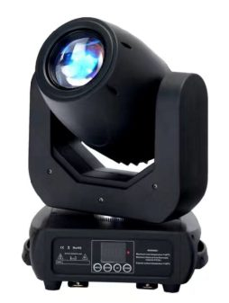

The most expensive mistake in venue lighting is buying a specification instead of a job. A room does not need moving heads; it needs coverage, front light, colour and a little movement, and those four jobs have different cheapest answers. Getting them in the right order is what makes a modest budget look like a designed rig.
The short answer
Match the family to the job and buy the cheapest family that does it. Fixed LED PAR or bar for wash coverage from US$57, a profile spot for hard-edged front light and gobos from US$168, a moving head for positions that must change from US$45 to US$96, and a tunable white wash for front light. Movement last, because it is the most expensive way to add light.
Which fixture families does a venue actually need?
Five families cover almost every room, and each one exists because it does something the others cannot.
| Family | The job it does | Real example | EXW, 1 unit |
|---|---|---|---|
| LED PAR | Fixed colour wash, no edge control | RG-P47IC8-Ke12A 12x8W RGBW | US$67 |
| LED bar / batten | Even wash along a straight run | RG-W13IB8-Ke6A 6x8W RGBW | US$57 |
| COB PAR | Single-source wash with a clean field | RG-P56IC200-Ke1 200W RGBW | US$69 |
| Profile spot | Hard edge, gobos, front light | RG-PS200A20T50-K 200W | US$168 |
| Moving head | A position that has to change | RG-ML150BR-KNNW1H13 1x150W beam | US$96 |
The price spread is the point: four fixed bars cost less than one profile spot, and eight fixed fixtures cost less than three moving heads. Coverage is cheap; movement is not.
When is a fixed PAR better than a moving head?
Almost always, when the fixture is pointing at a fixed thing. A PAR on a wall wash, a batten over a bar, an uplight against a column — none of those positions ever needs to change, and paying for a motor there buys nothing.
The rule worth writing down: buy movement only where the aim changes during the show or between shows. Front light changes between shows. A wall wash does not.
There is a second, less obvious benefit. Fixed fixtures have no moving parts, so they fail less, and when they do fail it is a driver or an LED, not a belt or a bearing. In a venue where access needs a lift, that difference is worth more than the specification.
What does a profile spot give you that a PAR cannot?
A defined edge, and gobos. A profile has a lens system that projects a hard-edged beam you can shape with shutters or cutters and break up with a pattern, which is what front light and any projected texture needs. A PAR gives an even, soft-edged field and nothing else.
That is why the classic venue front truss uses profiles rather than PARs — not because profiles are brighter, but because you cannot cut a PAR out of the audience's eyes. If the room's front positions can only be aimed approximately, a profile is the fixture that makes that acceptable.
Where do moving heads earn their cost?
Four places, and they are all about change:
- A stage that reconfigures between a band, a DJ and a seated event.
- Positions with no fixed target — side booms that light whichever performer is upstage.
- Effects, where the movement itself is the visual.
- Places where a fixed rig cannot reach a second position without a second fixture.
Two or four units cover most small venues. The error is buying twelve and discovering the wash coverage is still missing.
How many fixtures should the room have?
Count backwards from coverage rather than forwards from budget. As a working figure, an even wash of a 6 m wide stage from a 4 m trim needs roughly one fixture per 1.5 m of width — about ten fixtures for the wash — plus two to four for movement and two for front light.
| Layer | Qty | Typical family | Budget band (EXW) |
|---|---|---|---|
| Stage wash | 8-10 | LED bar or PAR | US$57-69 each |
| Movement / effects | 2-4 | Moving head | US$45-159 each |
| Front light | 2-4 | Profile or tunable white | US$95-223 each |
| Uplight / accent | 4-8 | LED PAR | US$57-69 each |
Note where the money actually goes: most of it into coverage, not into the fixtures people notice. A room lit evenly by cheap bars looks better than a room lit patchily by expensive movers.
What should the first purchase be?
Coverage, then front light, then movement. If the budget only stretches to one layer, buy the wash, because an evenly lit stage with no movement reads as a designed room while a moving rig with dark corners does not.
For a bar or a small club, the cheapest coherent first order is eight LED bars for coverage plus two moving heads for movement, which comes to under US$700 EXW for the fixtures. For a live-music or theatre room, invert the priority and start with profiles on the front truss.
How should the fixtures be positioned and aimed?
The fixture schedule matters less than where the fixtures point, and three conventions cover most rooms.
- Front light at roughly 45 degrees either side and 45 degrees above. Steeper than that and you light the forehead and the floor; shallower and you light the audience or the back wall.
- Uplight spacing at about the height of the surface divided by two. A 4 m column takes an uplight roughly every 2 m to read as a continuous wash rather than a series of cones.
- Wash positions on the downstage edge of the area they cover, so the beam does not pass in front of the performers to reach the upstage floor.
Before ordering anything, stand where the audience will stand and look at each position you intend to use. A fixture position that is obvious on a plan can turn out to be blocked by a beam or a speaker once you are in the room.
What to send us
Send the room's dimensions, the trim height available, what the room is used for and the budget for the first phase. We will return a fixture schedule split by layer — coverage, front light, movement — with tier pricing at your quantity, and a clear statement of which layer to phase in second.
Frequently Asked Questions
Do I need moving heads in a small venue?
Two or four, usually, not a full rig. Movement is what makes a fixed rig look alive, but coverage, front light and colour wash are cheaper and more useful from fixed fixtures. A venue with eight fixed PAR and four moving heads outperforms one with twelve moving heads and nothing else.
Is a moving head always better than a fixed PAR?
No. A fixed LED PAR does one job — a wash from a fixed position — and does it for US$57 to US$69 in our range, while a moving head starts at US$45 for a small wash unit and US$96 for a beam. Pay for movement only where the position has to change.
What does a profile spot add that a PAR cannot?
A defined edge and gobos. A profile throws a hard-edged, shapeable beam you can cut and pattern, which is what front light and any projected effect needs. A PAR gives an even field with a soft edge and cannot do either.
How many fixtures does a small venue need?
Count backwards from coverage. To wash a 6 m stage evenly you need roughly one fixture per 1.5 m of width at the trim height, so eight to ten fixtures for the wash, plus two to four for movement and two for front light.
Should the venue buy fixed white fixtures for front light?
Yes, if the front light will never move. A warm-white or tunable-white wash aimed at the stage edge is the least glamorous and most used fixture in the room, and it does not need to move.
Need help choosing fixtures for your project? Tell us the venue type and room size — we'll spec it for free.
Request a Free Rig Spec →